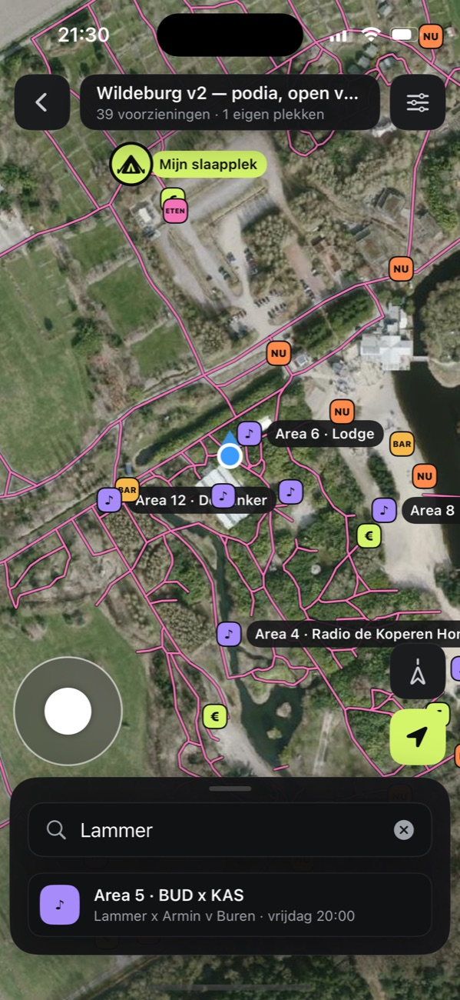
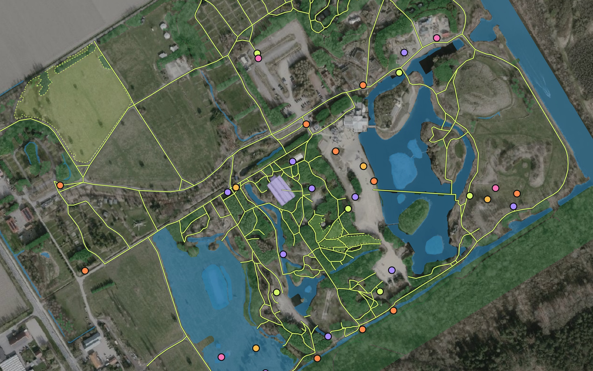
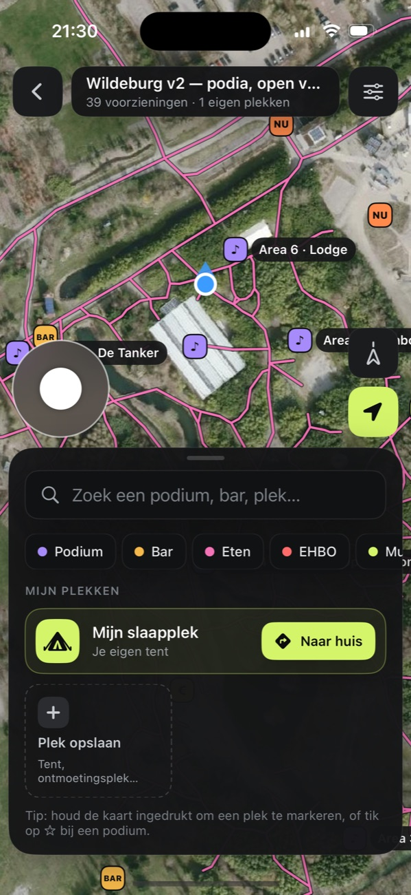

Google Maps
voor je festival.
Normale kaarten zien een weiland of een bos. floc kent de paden, podia, bars, WC's en nooduitgangen van jouw event en loodst je er feilloos naartoe. Ook terug naar je tent om 4 uur 's nachts.


Je kaart-app kent het weiland. Niet je festival.
Een festivalterrein bestaat maar een paar dagen per jaar. Geen enkele kaart-app weet waar het podium staat, welk pad door het bos loopt of welke doorgang vanavond dicht is. Dus dwalen bezoekers rond met een PDF-plattegrond en een lege batterij.
Geen paden, geen podia
Op een gewone kaart is je festival een groen vlak zonder paden, hekken of podia. De route stopt bij de parkeerplaats.
Een PDF zegt niet waar jij staat
De plattegrond is mooi, maar op een PDF zie je niet waar je zelf bent en welke kant je op moet. Zeker niet in het donker.
Geen bereik
Met tienduizenden mensen op één plek valt het netwerk weg. Precies op het moment dat je je vrienden of je tent zoekt.

Minder zoeken.
Meer festival.
Open de kaart van je event en je ziet meteen waar je bent, wat er is en hoe je er komt. Geen gedoe, geen account nodig.
Een route over de paden die er echt zijn.
floc rekent over de paden, velden en doorgangen van het terrein zelf. Je ziet de afstand en looptijd, en de route past zich aan terwijl je loopt.
- Route naar elk podium, elke bar of elke plek die je op de kaart aanwijst
- Afstand en looptijd tellen mee terwijl je loopt
- Kaart draait mee met de richting waarin je kijkt
Zoek op act. floc weet waar ze spelen.
Typ de naam van een artiest, een podium of gewoon "bar". Elk podium heeft z'n eigen timetable, per dag. Eén tik op Route en je bent onderweg.
- Zoeken in namen, categorieën en de complete timetable
- Info, foto en planning per podium
- Zet je favoriete podia met een ster bij je plekken

Je tent terugvinden. Ook om 4 uur 's nachts.
Zet bij aankomst je slaapplek op de kaart. Een tik op Naar huis brengt je terug, tussen duizend identieke tenten door. Sla ook de tent van vrienden of jullie vaste ontmoetingsplek op.
- Eén speciale slaapplek, altijd binnen handbereik
- Eigen plekken: tent van iemand, ontmoetingsplek, favoriete plek
- Blijft alleen op jouw telefoon bewaard

Waar is de dichtstbijzijnde WC? Echt de dichtstbijzijnde.
Kies een categorie en floc sorteert alles op echte loopafstand, niet hemelsbreed. Want de WC aan de overkant van de vijver is niet dichtbij.
- WC, EHBO, munten, eten, water, bars, kluisjes
- Gesorteerd op hoe ver je echt moet lopen
- De kaart toont alleen wat je zoekt

Werkt zonder bereik
De hele kaart, met luchtfoto, paden en voorzieningen, staat op je telefoon. Routes rekent floc op je telefoon zelf uit. Geen netwerk nodig.
Luchtfoto als ondergrond
Je herkent het terrein meteen: elk pad en elke boomgrens.
Alles op één kaart
Elke soort voorziening z'n eigen kleur, net als op het terrein.
Jouw festival, jouw lijstje
Sterretje bij je favoriete podia en bars. Ze staan bovenaan, met de route er direct bij.
Organiseer je een festival of event?
Zet je terrein in floc en je bezoekers vinden zelf de weg naar elk podium, elke bar en elke nooduitgang.
Goed om te weten.
Werkt floc echt zonder internet?+
Ja. Zodra de kaart van je event op je telefoon staat, heb je geen netwerk meer nodig. De luchtfoto, de paden, de voorzieningen en de timetable staan allemaal lokaal, en routes rekent je telefoon zelf uit. Je locatie komt van GPS, en dat werkt ook zonder bereik.
Waarom niet gewoon Google Maps?+
Omdat een festivalterrein voor een gewone kaart niet bestaat. Die ziet een weiland of een bos, zonder de paden, hekken, podia en bars die er een paar dagen staan. floc gebruikt de kaart die de organisatie zelf maakt van het terrein zoals het er tijdens het event bij ligt.
Hoe nauwkeurig is mijn locatie?+
GPS is buiten meestal op een paar meter nauwkeurig. Loop je vlak bij een pad, dan zet floc je stip netjes op dat pad.
Op welke telefoons werkt floc?+
We beginnen op iPhone. Android volgt later.
Wat gebeurt er met mijn opgeslagen plekken?+
Je slaapplek, opgeslagen plekken en favorieten blijven op je eigen telefoon. Je hebt geen account nodig.
Nooit meer zoeken
naar je tent.
floc komt in 2027 naar de eerste festivals. Download de app en open de kaart van jouw event.